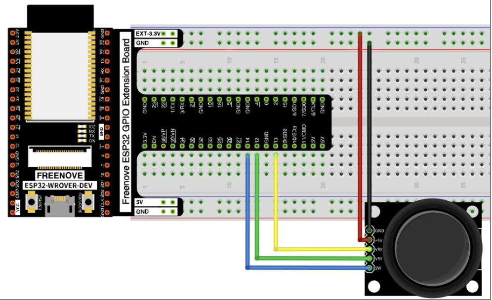
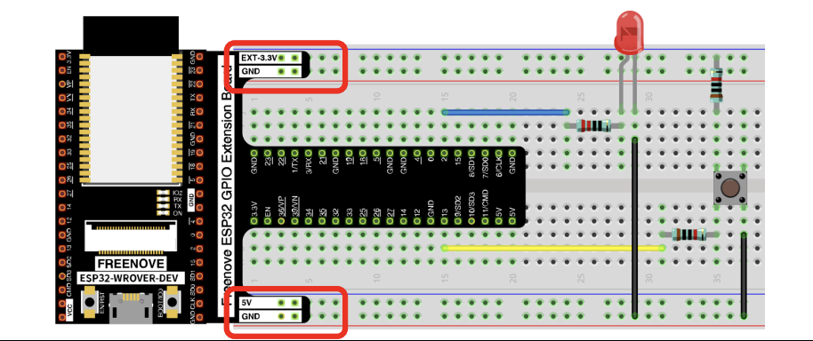
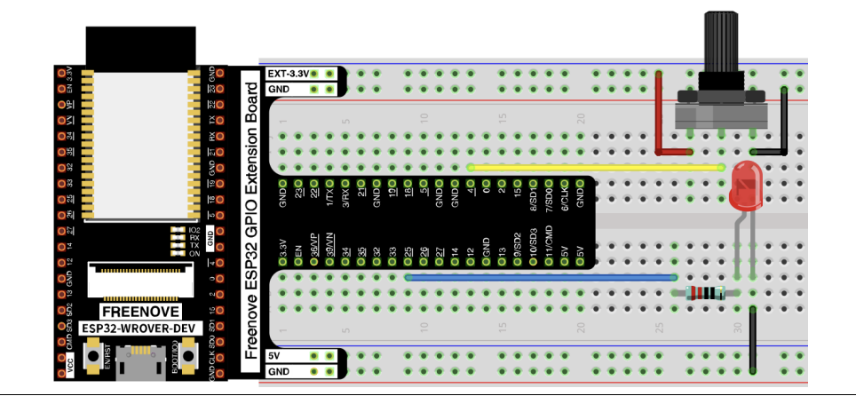
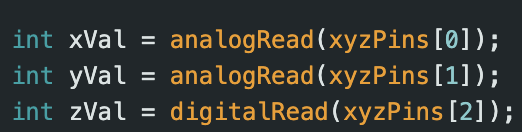
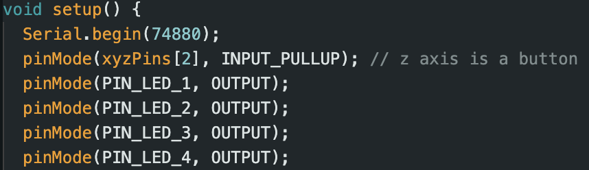
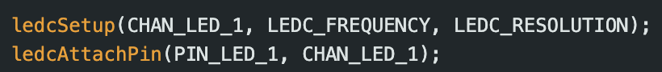
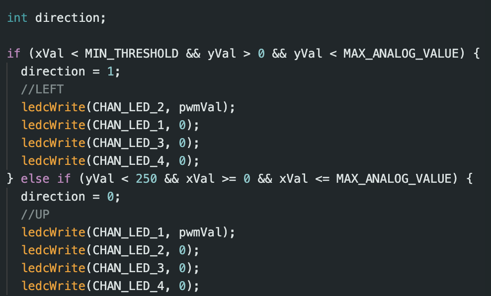
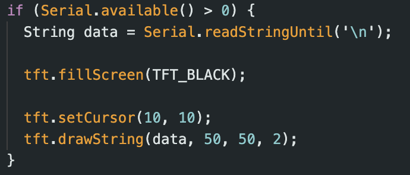

This page will contain information about the technical setup and physical creation process for each module and act as a ReadMe for replication and usage.
Technical Documentation
Software Installation and Setup
The Arduino IDE 2.2.1 was used on a Sonoma 14.3 M1 chip MacBook Pro. After downloading the IDE, the ESP32 board had to be added.
In the top bar, select Arduino IDE > Settings and type "https://dl.espressif.com/dl/package_esp32_index.json"
into the textbox next to "Additional boards manager URLs" to enable the ESP32 board.
In the top bar, go to Tools > Boards > Board Manager. Type esp32 into the textbox and search. Install the package by Espressif.
I used version 2.0.11.
After this, go back to Tools > Boards > esp32 > TTGO T1. Then go to Tools > Port and choose the option with "usbserial" in it.
Then to add the needed libraries, go to Sketch > Include Library > Manage Libraries and find TFT_eSPI by Bodmer and install it.
Sample displays can then be found in File > Examples > TFT_eSPI > 160x128. Self made code could also be directly flashed to the device using the upload button.
Make sure to change the upload speed to something less than the maximum in Tools > Upload Speed. I used 460800.
The first time doing this, it is necessary to modify the User_Setup.h file. To find it, go back to Arduino IDE > Settings and find the box that says "Sketchbook location: "
and navigate through your file system to find the location of your Arduino folder. Then go to libraries/TFT_eSPI/User_Setup_Select.h and then open up the file.
Comment out the line that says "#include <User_Setup.h>" (line 22 for me) and uncomment out the line that says "#include <User_Setups/Setup25_TTGO_T_Display.h>". This should allow
code to be reflected in the display of the TTGO.
After all of this, you should be able to flash code to the ESP32 device to show graphics on the display like in task 1:
Module 2 - Interactive Art ReadMe
Physical Setup Process
Step 1: Collect components
Gather a TTGO T1 ESP32 device, a button, a joystick, 4 differently colored LEDs, a potentiometer and as many female-female and female-male wires as possible. Double sided tape, hot glue, and solder may be required as well.
Step 2: Wire power and ground
Start by inserting the ESP32's legs into the breadboard. Try to position it above the central gap in the breadboard so that both rows of legs are on either side of the gap. Connect the ground and 3V legs on the ESP32 to
the two strips on the ends of the breadboard that are horizontally connected. Try to connect the 3V (or 5V) to the properly marked (+) strip and the ground, G, pin to the (-) strip.
Step 3: Connect joystick
Use 5 female-male wires to connect the pins of the joystick to the ground strip, 3V strip, and 3 other pins of the ESP32, in that order. Take note of the number used for each pin as they will serve to read the x-axis, y-axis and z-axis motions.

Step 4: Connect button
Use a female-female wire to connect from another pin to a resistor of any value (numeric value doesn't matter, it's just used to prevent short circuits in worst case scenario) and place other leg in a new column to connect to one side of the button.
Ensure that the button, like the ESP32, is set up to cross the gap in the breadboard. The other leg should then be connected to ground using another female-female wire.

Step 5: Connect potentiometer
Like with the button, connect the potentiometers left and rightmost leg to a power source and ground (order doesn't matter) and connect the middle leg to another pin on the ESP32.

Step 6: Connect LEDs
Grab the 4 LEDs and place them in a way to form a square. Connect the 3V to a a resistor that connects to the long leg of the LED in another column. The shorter leg of the LED then connects to ground to form a complete circuit.
Do this for all 4 LEDs.
Video of circuitry construction
Coding Process - Arduino
On the arduino side, analogRead and digitalRead are used to grab the x, y, z values from the corresponding pins on the joystick within the loop() function which is repeatedly called.

The same is done for the button and potentiometer readings. Within the setup() function, variables are declared and the LEDs are set up to be in output mode and the button and z-axis of the joystick are set to INPUT_PULLUP mode to register
their nature as buttons. Ensure to also set up the Serial baudrate for communication (I used 74880). The LEDs must also be set up so that they can dynamically take in the reading from the potentiometer for their intensity level using ledcSetup
and ledcAttachPin to connect different channels to the pin numbers. For ledcSetup I use '#define LEDC_FREQUENCY 1000' and '#define LEDC_RESOLUTION 8'.


Other than this, the main logic comes from determining a direction to move in based on the readings from the joystick. This is also where the values of the LEDs would be set. This can be determined by experimentation by printing out the x, y, z readings
in the serial monitor. The determining of left, right, up, and down are relative to the orientation of the joystick on the board. The exact values of MIN_THRESHOLD and MAX_THRESHOLD depend on how accurate the readings from analogRead are and the voltage used.
I found personally that if I used 5V, the readings from analogRead would always be capped at 4095 so it wasn't able to differentiate between the directions when the joystick was moved past a small range from the center because the voltage was too high. As such,
I used the 3.3V pin on the ESP32. The direction encodings I chose were 0 for up, 1 for right, 2 for down, 3 for left, 4 if left in the center, 5 if the joystick is pressed and 6 for the external button. In each case, a different light pattern should display, preferably
in correspondence to the direction that the joystick is moved.

Finally, use Serial.print(direction) and Serial.print('\n') to send over the direction so that the value can be read in the Processing side of the code. Use a delay of 100 milliseconds as well to ensure some buffer corresponding to human response speed.
I also implemented a highscore readout on the ESP32's display that constantly updates using similar readings coming from the Processing side of the code.

Make sure to include TFT_eSPI.h and declare a new TFT_eSPI object called tft and declare tft.begin() and the rotation, text size, and text color within the setup() and have a Serial.readStringUntil('\n') within loop() to fill in the ESP32 screen with the data received.
Coding Process - Processing
The game itself was adapted from a youtube tutorial and modified so that it could work with certain inputs from the arduino port. The original code can be found here: https://www.youtube.com/watch?v=Q5cMcx5uotQ&ab_channel=BarneyCodes. To modify it, any keyPressed() events
should be removed and replaced with logic to to read in from serial. Declare a new Serial object called myPort and within setup() set 'myPort = new Serial(this, Serial.list()[4], baudrate)' where the index of Serial.list() can be found by experimentation and baudrate is the
same as the one used in the Arduino side. Import 'processing.serial.*' to do this. Within draw() call a helper function that checks for port availability and stores values coming from myPort using 'myPort.readStringUntil('\n')'. Trim the value and parseInt it. Determine the
snake's current direction by accessing the snake object's x and y velocity with snake.vel.x and snake.vel.y. Then use a switch statement to update the velocities as long as the current direction is not in the opposite direction. In the event of direction 5 or 6 (the joystick button
is pressed or the external one is), update the logic accordingly. I set it so pressing the joystick replaces a mouseclick and can be used to restart the game from the startscreen, and direction 6 immediately sets the snake status to dead to end the game.
The highscore value can be sent using myPort.write(). I had a slight struggle here because I would receive the highscore value back in my Processing code from the port and the Processing code would try to evaluate it as an integer. To fix this, I add a try and catch exception around the parseInt logic.
Step 1: Using heat gun, place shrink wrap on exposed metal of battery wires to ensure there is no short circuit.
Step 2: Connect battery to adapter to connect to the ESP32
Step 3: Place ESP32 + 220mA battery pack into an already decorated envelope and align the screen with the small cutout in the front.
Step 4: Make holes in the sides of the envelope to string rope through.
Step 5: Drill hole into popsicle stick to act as the hanger to hold up the installation.
Step 6: Place string through hole in posicle stick and tie tightly. Then do the same through the holes in the envelope to connect. Adjust string height as needed.
Step 7: Install! We placed all the ESP32's next to each other hanging from a gap in the ceiling right in front of the window in Milstein 5.